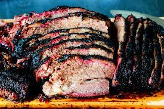

Brisket
Description
Make this brisket for someone and I guarantee the brisket will not
be the only thing gushing juices. You are welcome.
Ingredients
- Big ole packer Brisket
- 100 g salt
- 100 g black pepper
Steps
- Trim brisket ever so gently.
- Coat brisket in salt and pepper.
- Smoke around 14 hours at 225 degrees F.
- Wrap and let rest for 4 hours.
- Let the juices flow forth.